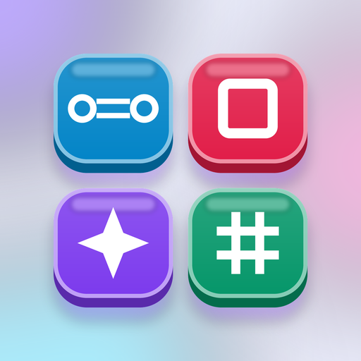

Logic Grid
Hashi, Slitherlink, Star Battle, Kakuro · Bốn trò giải đố logic
Get it on Google PlayFour classic logic puzzles in one calm app
Every level has exactly one solution, found by logic alone, never by guessing.
- Hashi (Bridges): join the islands with bridges until each shows its number and all are connected
- Slitherlink: draw one closed loop around the numbered cells
- Star Battle: one star in every row, column and region, and no two stars touching
- Kakuro: cross sums, fill the runs with digits 1 to 9 that add up to the clues
- 600 levels per puzzle in four packs, Easy to Expert
- A daily challenge with the last 30 days to replay, a streak, three daily quests and an evening reminder
- Hints, undo, restart, optional rule errors shown in red
- Achievements, coins and app colours to collect
- Plays offline, saves your board when you leave, no account
Logic Grid – bốn trò giải đố logic
Hashi (nối cầu), Slitherlink, Star Battle và Kakuro. Mỗi màn có đúng một lời giải, giải bằng suy luận, không cần đoán.
- Hashi (nối cầu): nối các đảo bằng cầu cho đủ số trên mỗi đảo và tất cả liền một khối
- Slitherlink: vẽ một vòng khép kín quanh các ô có số
- Star Battle: mỗi hàng, cột và vùng màu một sao, hai sao không chạm nhau
- Kakuro: điền số 1–9 sao cho tổng mỗi dải bằng số gợi ý
- 600 màn mỗi trò, bốn gói từ Dễ đến Cao thủ
- Thử thách hằng ngày, lịch 30 ngày, chuỗi ngày, ba nhiệm vụ mỗi ngày, nhắc chơi buổi tối
- Gợi ý, hoàn tác, chơi lại, thành tích, xu và màu ứng dụng
- Chơi không cần mạng, không cần tài khoản
Logikrätsel: Hashi, Slitherlink, Star Battle, Kakuro
Vier klassische Logikrätsel in einer ruhigen App. Jedes Level hat genau eine Lösung, ganz ohne Raten.
- 600 Level pro Rätsel in vier Paketen, von Leicht bis Experte
- Tagesrätsel, Serie und drei tägliche Aufgaben
- Tipps, Rückgängig, Neustart
- Spielt auch offline, kein Konto
Casse-têtes logiques : Hashi, Slitherlink, Star Battle, Kakuro
Quatre casse-têtes logiques classiques dans une app zen. Chaque niveau a une seule solution, sans jamais deviner.
- 600 niveaux par casse-tête en quatre packs, de Facile à Expert
- Défi du jour, série et trois quêtes quotidiennes
- Indices, annulation, recommencer
- Fonctionne hors ligne, sans compte
Puzles de lógica: Hashi, Slitherlink, Star Battle, Kakuro
Cuatro puzles de lógica clásicos en una app tranquila. Cada nivel tiene una sola solución, sin adivinar.
- 600 niveles por puzle en cuatro paquetes, de Fácil a Experto
- Reto diario, racha y tres misiones diarias
- Pistas, deshacer, reiniciar
- Se juega sin internet, sin cuenta
Rompicapo logici: Hashi, Slitherlink, Star Battle, Kakuro
Quattro rompicapo di logica classici in un'app rilassante. Ogni livello ha una sola soluzione, senza tirare a indovinare.
- 600 livelli per rompicapo in quattro pacchetti, da Facile a Esperto
- Sfida del giorno, serie e tre missioni giornaliere
- Aiuti, annulla, ricomincia
- Funziona offline, senza account
Łamigłówki logiczne: Hashi, Slitherlink, Star Battle, Kakuro
Cztery klasyczne łamigłówki logiczne w jednej spokojnej aplikacji. Każdy poziom ma dokładnie jedno rozwiązanie, bez zgadywania.
- 600 poziomów w każdej łamigłówce, cztery pakiety od Łatwych do Eksperta
- Wyzwanie dnia, seria i trzy codzienne zadania
- Podpowiedzi, cofanie, restart
- Działa offline, bez konta
Privacy Policy · Chính sách quyền riêng tư
Contact · Liên hệ: lehoang10112002@gmail.com